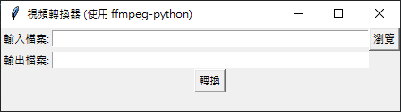

使用 Python 和 FFmpeg 打造簡易影片轉換器
今天我要跟各位分享一個有趣的小專案 - 使用 Python 和 FFmpeg 製作的簡易影片轉換器。這個應用程式不僅實用，還能讓我們學習到如何結合 Python 的圖形使用者介面（GUI）與強大的影片處理工具。
專案概述

這個影片轉換器具有以下特點：
- 簡潔的圖形使用者介面
- 可以選擇輸入檔案和指定輸出檔案
- 使用 FFmpeg 進行影片轉換
- 顯示轉換狀態和錯誤訊息
使用的技術
- Python：程式的主要語言
- tkinter：Python 的標準 GUI 函式庫
- ffmpeg-python：FFmpeg 的 Python 綁定，用於影片處理（安裝：
pip install ffmpeg-python）
1 | # 導入必要的模組 |
程式碼解析
讓我們來看看這個應用程式的主要組成部分：
- 導入必要模組：
我們導入了 ffmpeg、tkinter 以及 filedialog。這些模組分別用於影片處理、建立 GUI 和處理檔案選擇。 - 檔案選擇功能：
select_file() 函數使用 filedialog.askopenfilename() 來開啟檔案選擇對話框，讓使用者可以輕鬆選擇要轉換的影片檔案。 - 影片轉換功能：
convert_video() 是按鈕的回呼函數，負責做空值防呆、立即顯示「轉換中...」並把實際工作交給背景執行緒。真正的轉換邏輯在 _run_conversion() 中：呼叫 ffmpeg.run() 時傳入 capture_stderr=True，確保轉換失敗時能透過 e.stderr.decode() 取得 FFmpeg 的實際錯誤輸出，而不只是一句通用的 "ffmpeg error"。完成後用 root.after(0, ...) 回到主執行緒更新 UI，這是 tkinter 的線程安全做法。 - 建立 GUI：
我們使用 tkinter 建立了一個簡單的視窗，包含輸入檔案和輸出檔案的輸入框、瀏覽按鈕、轉換按鈕和狀態標籤。
如何使用
- 啟動應用程式後，你會看到一個簡單的視窗。
- 點擊「瀏覽」按鈕選擇要轉換的影片檔案。
- 在「輸出檔案」欄位中輸入想要的輸出檔案名稱（記得加上副檔名）。
- 點擊「轉換」按鈕開始轉換過程。
- 轉換完成後，狀態標籤會顯示成功或失敗的訊息。
注意事項
請確保你的系統上已安裝 FFmpeg。
這個程式使用了 FFmpeg 的預設參數進行轉換。如果你需要更多自訂選項，可以修改 _run_conversion() 函數中的 ffmpeg.output() 部分。
轉換時 GUI 會顯示「轉換中...」而不是凍結，這是因為轉換跑在背景執行緒；如果要加上取消按鈕或進度條，可以在此基礎上擴展。
結語
這個影片轉換器把 FFmpeg 的指令列能力包進 tkinter GUI，輸入路徑、按轉換、等完成。輸出檔案欄位目前需要手動輸入完整路徑（含副檔名），若想加上「另存新檔」對話框，可參考 filedialog.asksaveasfilename() 自行擴充。